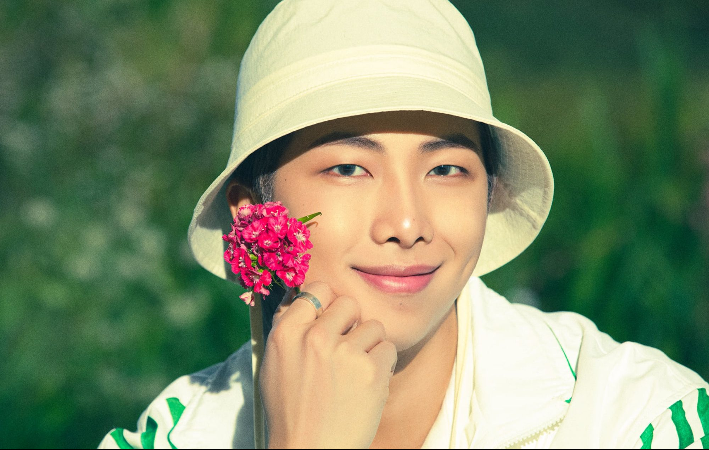
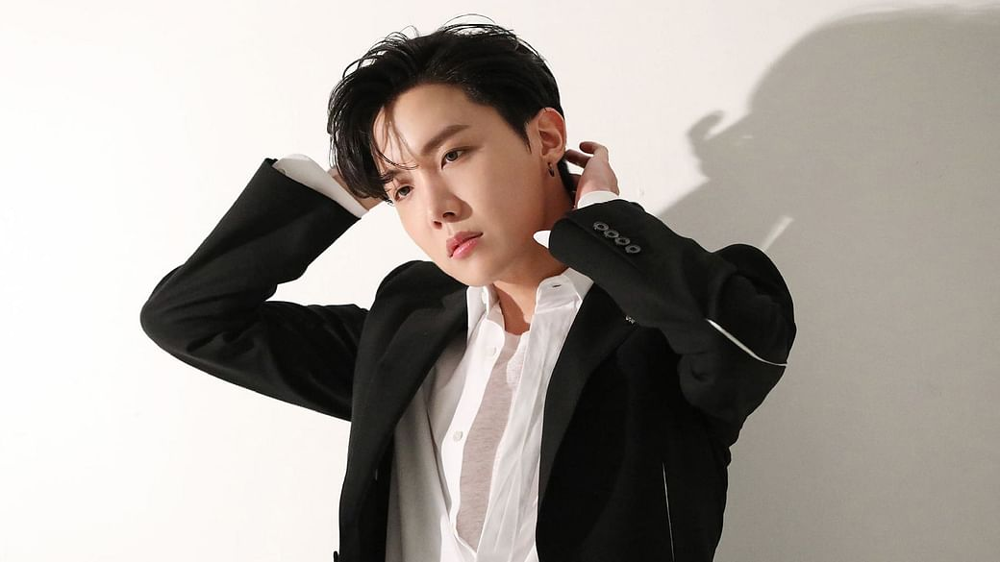
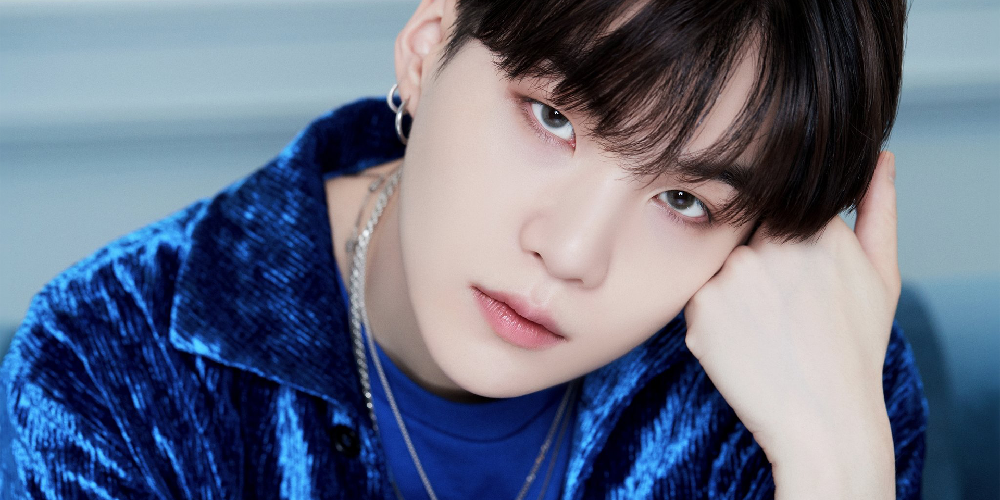
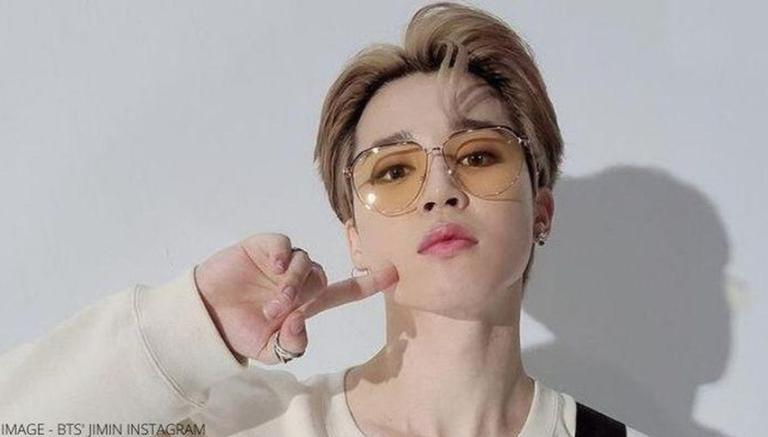
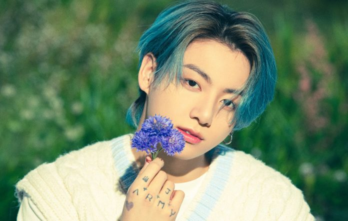

BTS's music is also a success because of the subject of their music. While many K-pop songs are about
relationships and love,
BTS covers subjects that other bands may not like bullying, elitism, and mental health. Their ability to be
relatable,
humble while still being entertaining is rare.
BTS MEMBERS PROFILE
RM

Name: RM (아르엠), formerly Rap Monster (랩몬스터)
Birth Name: Kim Nam Joon (김남준)
Position: Leader, Main Rapper
Birthday: September 12, 1994
Zodiac Sign: Virgo
Height: 180 cm (5’11”)
Weight: 73.6 kg (162 lbs)
Blood Type A
Jin
Name: Jin (진)
Birth Name: Kim Seok Jin (김석진)
Position: Sub Vocalist, Visual
Birthday: December 4, 1992
Zodiac Sign: Sagittarius
Height: 178.3 cm (5’10.2″)
Weight: 63 kg (139 lbs)
Blood Type O
J-Hope

Name: J-Hope (제이홉)
Birth Name: Jung Ho Seok (정호석)
Position: Main Dancer, Sub Rapper, Sub Vocalist
Birthday: February 18, 1994
Zodiac Sign: Aquarius
Height: 177 cm (5’10”)
Weight: 65 kg (143 lbs)
Blood Type A
Suga

Name: Suga (슈가)
Birth Name: Min Yoon Gi (민윤기)
Position: Lead Rapper
Birthday: March 9, 1993
Zodiac Sign: Pisces
Height: 174 cm (5’8.5″)
Weight: 59 kg (130 lbs)
Blood Type O
Jimin

Name: Jimin (지민)
Birth Name: Park Ji Min (박지민)
Position: Main Dancer, Lead Vocalist
Birthday: October 13, 1995
Zodiac Sign: Libra
Height: 174 cm (5’8.5″)
Weight: 58.6 kg (129 lbs)
Blood Type A
V
Name: V (뷔)
Birth Name: Kim Tae Hyung (김태형)
Position: Lead Dancer, Sub Vocalist, Visual
Birthday: December 30, 1995
Zodiac Sign: Capricorn
Height: 178.8 cm (5’10.4″)
Weight: 63 kg (139 lbs)
Blood Type AB
Jungkook

Name: Jungkook (정국)
Birth Name: Jeon Jung Kook (전정국)
Position: Main Vocalist, Lead Dancer, Sub Rapper, Center, Maknae
Birthday: September 1, 1997
Zodiac Sign: Virgo
Height: 178 cm (5’10”)
Weight: 66 kg (145 lbs)
Blood Type A
ACHIVEMENTS
- In their years as a band, BTS has broken 18 Guinness World Records and took home Teen Choice Awards,
MTV VMAs, Soompy Awards, Radio Disney Music Awards, iHeart Radio Music Awards, American Music Awards and
more. In 2020 alone, their song “Dynamite” broke iTunes, Spotify and YouTube records.
- BTS have attained 23 Guinness World Records, including for the most Twitter engagements and for the most
viewed video/music video on YouTube in 24 hours with "Butter"—the group was inducted into the record body's
2022
Hall of Fame in September 2021.
- BTS wins four Billboard Music Awards including Top Social Artist; dedicate honour to BTS ARMY - WATCH.
K-Pop
superstars BTS extended their reign over this year's Billboard Music Awards (BBMA), as they scooped up has
won four prizes,
the most for the group at the event.
- #1 top artist for a third consecutive year for all age groups between 13 - 39, and #3 for the 40s age
group,
according to a national survey conducted by Gallup Korea for 2020.
- 2nd most searched public figure on NAVER in 2020.
- First Asian act to be nominated in all three major music award shows in the U.S.: GRAMMY Awards, Billboard
Music Awards (BBMAs), and the American Music Awards (AMAs).
- First Korean pop artists and group to earn a GRAMMY nomination, with “Dynamite” being nominated in the
‘Best
Pop Duo/Group Performance’ category at the 2021 GRAMMY Awards.
- First Korean act to obtain two RIAA Platinum album certifications.
- First Korean group to achieve a Platinum single on the New Zealand charts.
- First Korean act to have their cover photo, photoshoot, cover story, and interview on the American edition
of Esquire for their winter cover.
- First Asian act to enter both UWC’s Albums and Singles Year-End charts simultaneously.
Honorees for Asia Society’s Asia Game Changers Awards.
- Most mentioned Korean pop group in 2020.
- Named as one of the Korean personalities who brought comfort to people all over the world by The Ministry
of
Culture, Sports & Tourism Korea.
- Named as one of the ten artists who inspired the world public with pioneering achievements in the Korean
pop
culture world this year in the CJ ENM ‘2020 Visionary.
- Named ‘2020 Band of the Year’ by Consequence of Sound, making them the first pop group to achieve this
feat.
- Named one of the 100 Digital Stars by Forbes Asia.
- Named as ‘2020 Entertainer of the Year’ by TIME.
- Named the ‘Best Male Idol’ at the 2021 Korea First Brand Awards.
- Named the ‘Korean who shined in the world in 2020’ by KOREA.net.
- Selected as one of the ‘TOP STARS THAT HEATED 2020 UP.
- Selected as the world’s most “Global Sustainable Future Leader” for the second time in the UN SDG 2020
Global Sustainable Leaders/Companies/Brands 100 List, making them the only leader to be selected two years
in a row.
- Youngest recipients of the General James A. Van Fleet Award by The Korea Society at its 2020 Annual Gala.
- They are also the first musicians to receive this award.
- Ranked first in “Power People of 2020,” which is ranked by the number of votes by industry professionals.
- Ranked #1 in the ‘Best Artist of 2020’ and #2 in the ‘Biggest Event of 2020’ on an end-of-year survey
conducted by News1 (K-media), among 22 professionals in the music industry.
- Ranked #1 for both ‘Artist of the Year’ and ‘the Boy Group of the Year’ on KBS World Radio’s 2020 Year-End
K-Pop Survey.
- Ranked #7 on Genius’ ‘Top Artists of the Year.
- Received WSJ Magazine’s 2020 Music Innovator Award at the 10th annual WSJ Innovator Awards.
- Voted as the “Best Singer of 2020” by 200 industry professionals.
- Won ‘Best Artist of 2020’ at Seventeen’s Media Awards.
Why they give me inspiration?
I am a fan of BTS since year of 2014. why did I come to like them? Well, at first I really love while they were performing in thier MV's
and dance practices. Jungkook is my Bias but I like them all BTS is not BTS if there were lacking to the 7 members. I also often to learn
there dance choreographies. Ever since then I always watch them as I grow up from high school until today. There story are very inspiring
because when they are started they even beg for 200 people to watch their concert for free just to promote their group then now because
individual and group hard work they achieve the heights that they could not imagine that they achieve it. Starting from the very bottom
to the top and became legends. As a fan I am very proud because I am just a normal person dreaming big dreams. Because of them I am
also doing my best to achieve my dreams and make it come true. It might be difficult but I will offer my Blood, Sweat and Tears to achieve
that.